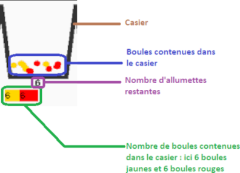

Description des paramètres de la simulation (1)
Chaque allumette est représentée par un casier. Le casier et son contenu servent à modéliser ce qui
se passe lors de l'application de l'algorithme.
Schéma de la représentation des actions possibles par l'IA pour une allumette.

Il y a autant de casiers que d'allumettes.
Le contenu de chaque casier est indépendant du contenu des autres casiers.
Il ne peut y avoir dans les casiers des boules retirant plus d'allumettes que les allumettes restantes correspondant au casier.
Par exemple, dans le dernier casier, il ne peut y avoir que des boules jaunes.